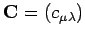
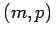
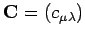
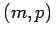
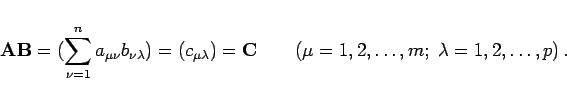

Inhalt Index DeskTop Bronstein

 Lineare Algebra Matrizen Rechenoperationen mit Matrizen Multiplikation zweier Matrizen
Lineare Algebra Matrizen Rechenoperationen mit Matrizen Multiplikation zweier Matrizen


Das Produkt zweier Matrizen  und
und  , auch skalares Matrixprodukt genannt, läßt sich nur bilden, wenn die Spaltenanzahl des linken Faktors
, auch skalares Matrixprodukt genannt, läßt sich nur bilden, wenn die Spaltenanzahl des linken Faktors  gleich der Zeilenanzahl des rechten Faktors
gleich der Zeilenanzahl des rechten Faktors  ist. Wenn
ist. Wenn  eine Matrix vom Typ (m,n) ist, dann muß die Matrix
eine Matrix vom Typ (m,n) ist, dann muß die Matrix  vom Typ (n,p) sein, und das Produkt ist eine Matrix  vom Typ . Hierbei ist
vom Typ (n,p) sein, und das Produkt ist eine Matrix  vom Typ . Hierbei ist  gleich dem Skalarprodukt der
gleich dem Skalarprodukt der  -ten Zeile des linken Faktors
-ten Zeile des linken Faktors  mit der
mit der  -ten Spalte des rechten Faktors
-ten Spalte des rechten Faktors  :
:
|  | (4.23) |